#1 · FORMUSDT09-03 03:00 → 09-03 04:00
-0.97%
entry 0.2667 stop 0.2641 target 0.2719 exit 0.2641 stop -0.97% fwd +1h -0.11% +4h -0.07% +8h +0.07% +24h +2.62%
USDT 永續 · MA7>14>25>99>120>200 且收盤量 > 前一根 × 2
· 收盤在 MA25 上方且離 MA25 ≤ 1.5%（像 BNB）
收盤進場；停在訊號 K 低（太窄則 0.5%）、目標 2R、或 8 根時間停。
同標的重疊訊號預設不重做。加總％是各筆相加，不是組合複利。
掃 231 檔 · 原始訊號 79 · 進場 63
· 陽線 20
出場：2R 23 · 停損 22 · 時間 9 · 未平 9
· 收盤後 +1h +0.79% · +4h +2.54%
· +8h +1.92% · +24h +3.17%
entry 0.2667 stop 0.2641 target 0.2719 exit 0.2641 stop -0.97% fwd +1h -0.11% +4h -0.07% +8h +0.07% +24h +2.62%
entry 0.7929 stop 0.7855 target 0.8077 exit 0.8077 target +1.87% fwd +1h +0.72% +4h +3.05% +8h +1.83% +24h +0.50%
entry 0.055 stop 0.054725 target 0.05555 exit 0.05555 target +1.00% fwd +1h +0.22% +4h +1.05% +8h +1.49% +24h -3.71%
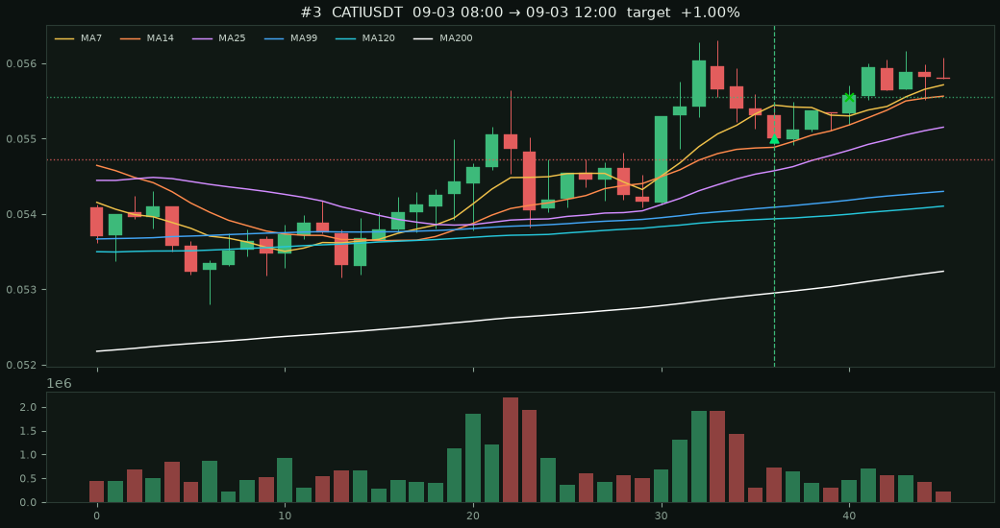
entry 1541.63 stop 1533.92 target 1557.05 exit 1533.92 stop -0.50% fwd +1h -0.01% +4h +0.38% +8h +0.06% +24h +1.37%
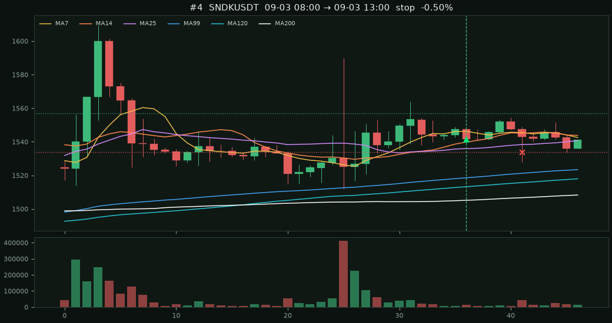
entry 13.8 stop 13.731 target 13.938 exit 13.938 target +1.00% fwd +1h +0.00% +4h +0.65% +8h +0.07% +24h +2.61%
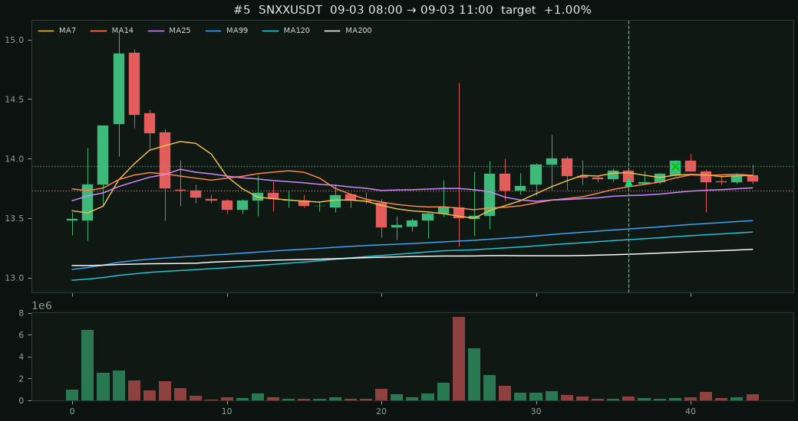
entry 95.77 stop 94.9 target 97.51 exit 94.9 stop -0.91% fwd +1h -0.36% +4h -1.57% +8h +1.10% +24h +0.19%
entry 0.2678 stop 0.2647 target 0.274 exit 0.2647 stop -1.16% fwd +1h +0.82% +4h -0.15% +8h +2.54% +24h +1.68%
entry 598.55 stop 595.557 target 604.535 exit 604.535 target +1.00% fwd +1h -0.01% +4h +0.09% +8h +2.61% +24h +2.42%
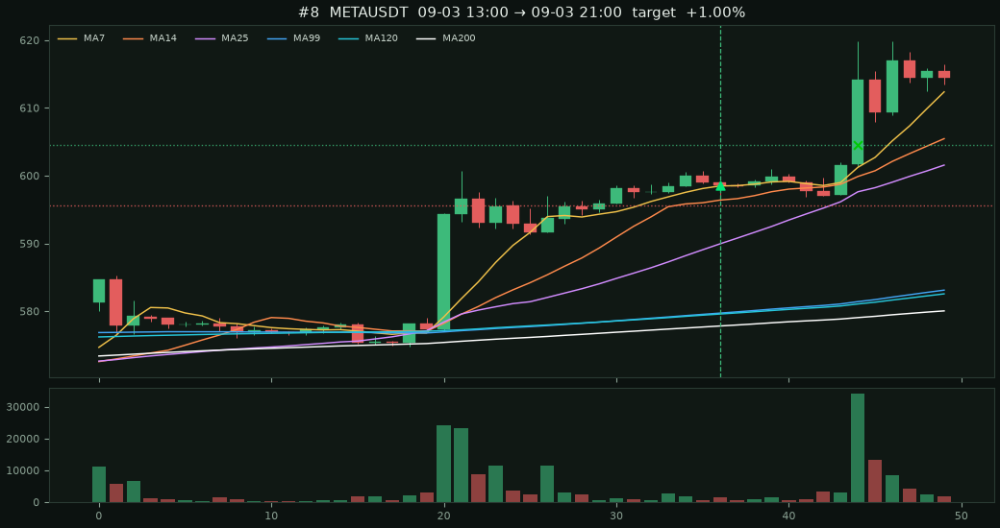
entry 954.32 stop 945 target 972.96 exit 945 stop -0.98% fwd +1h -0.07% +4h -0.60% +8h -0.81% +24h +1.62%
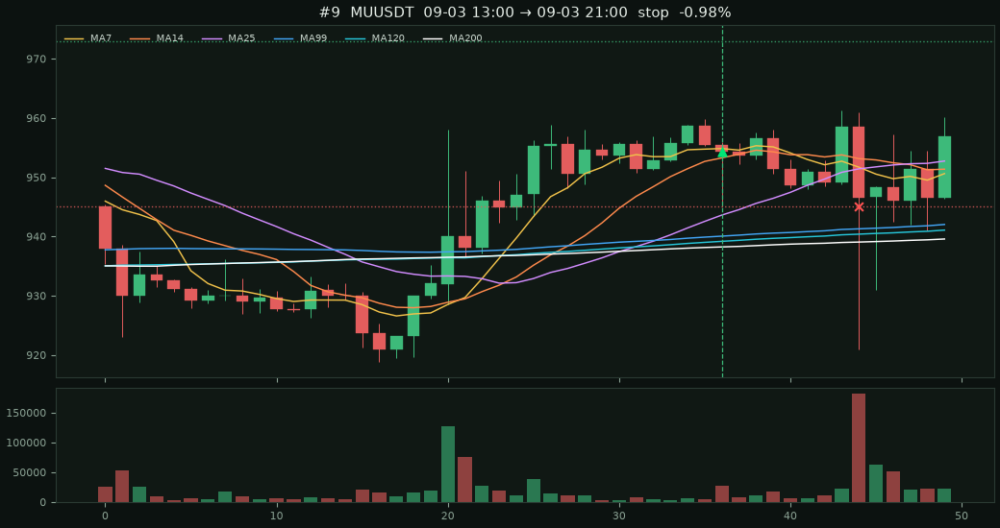
entry 0.00629 stop 0.006191 target 0.006488 exit 0.00624 time -0.79% fwd +1h +0.02% +4h -0.46% +8h -0.79% +24h +1.14%
entry 13.8 stop 13.55 target 14.3 exit 13.55 stop -1.81% fwd +1h +0.00% +4h -0.87% +8h +0.58% +24h +5.14%
entry 0.05152 stop 0.05123 target 0.0521 exit 0.05123 stop -0.56% fwd +1h +0.27% +4h +0.17% +8h +0.50% +24h +4.74%
entry 2.99 stop 2.97505 target 3.0199 exit 3.0199 target +1.00% fwd +1h +0.03% +4h +0.10% +8h -2.84% +24h -2.11%
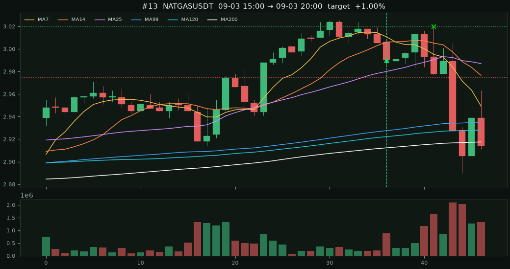
entry 30.22 stop 30.0689 target 30.5222 exit 30.0689 stop -0.50% fwd +1h -0.56% +4h +1.46% +8h -0.03% +24h +5.16%
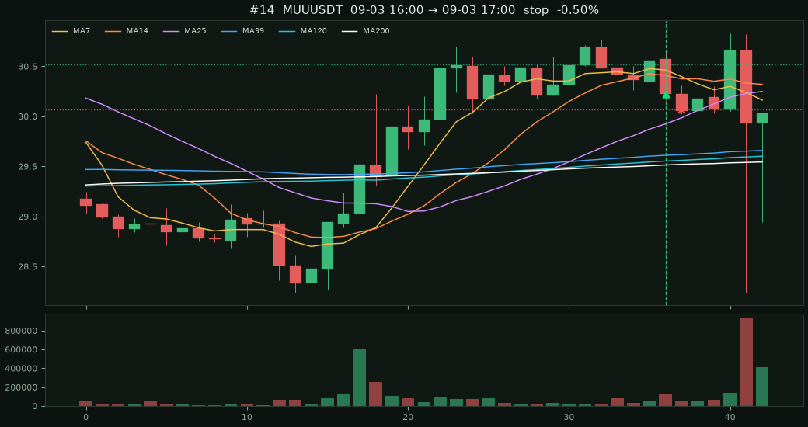
entry 1542.53 stop 1534.82 target 1557.96 exit 1534.82 stop -0.50% fwd +1h -0.42% +4h +0.57% +8h +1.26% +24h +3.44%
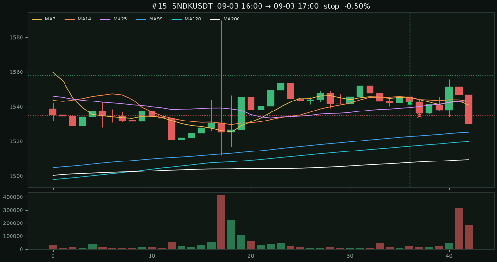
entry 0.02009 stop 0.0199 target 0.02047 exit 0.02047 target +1.89% fwd +1h +5.53% +4h +10.20% +8h +2.99% +24h +3.09%
entry 0.02684 stop 0.0267058 target 0.0271084 exit 0.0267058 stop -0.50% fwd +1h +0.00% +4h -0.93% +8h +2.83% +24h +1.49%
entry 0.05578 stop 0.0555011 target 0.0563378 exit 0.0563378 target +1.00% fwd +1h +0.82% +4h +20.47% +8h -2.31% +24h +4.39%
entry 0.07929 stop 0.07815 target 0.08157 exit 0.07815 stop -1.44% fwd +1h -0.05% +4h +5.03% +8h +1.93% +24h +1.01%
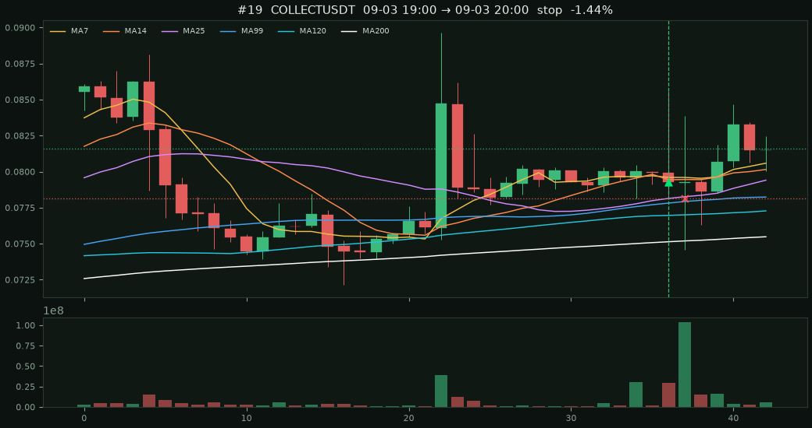
entry 362.08 stop 359.86 target 366.52 exit 366.52 target +1.23% fwd +1h +0.44% +4h +5.73% +8h +4.04% +24h +0.98%
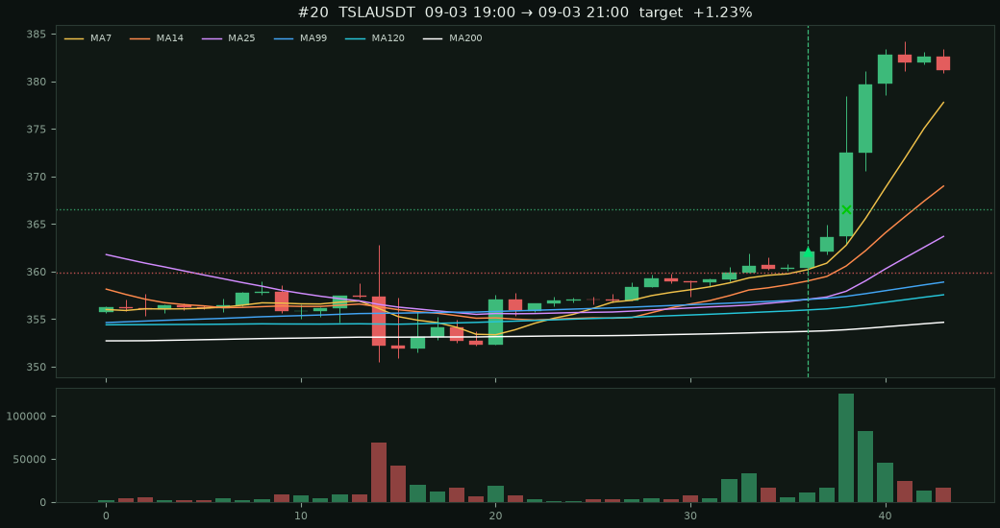
entry 0.05178 stop 0.0515 target 0.05234 exit 0.0515 stop -0.54% fwd +1h -0.73% +4h +0.93% +8h +1.37% +24h +4.65%
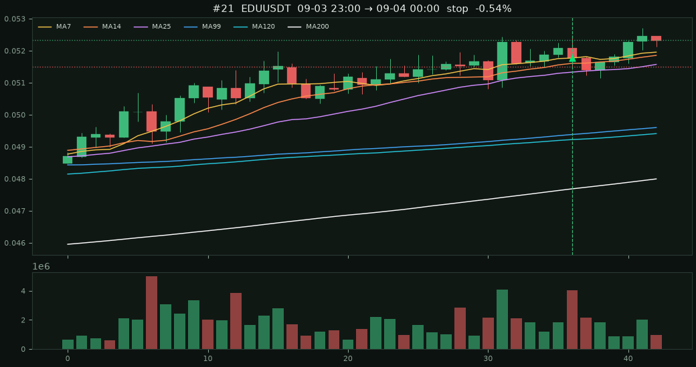
entry 91.5 stop 90.75 target 93 exit 91.73 time +0.25% fwd +1h +0.04% +4h +0.21% +8h +0.25% +24h -0.14%
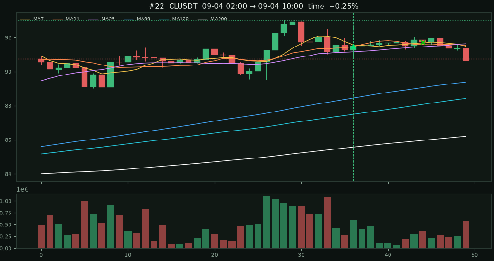
entry 0.09419 stop 0.093719 target 0.0951319 exit 0.093719 stop -0.50% fwd +1h -0.02% +4h -0.97% +8h +0.45% +24h -3.86%
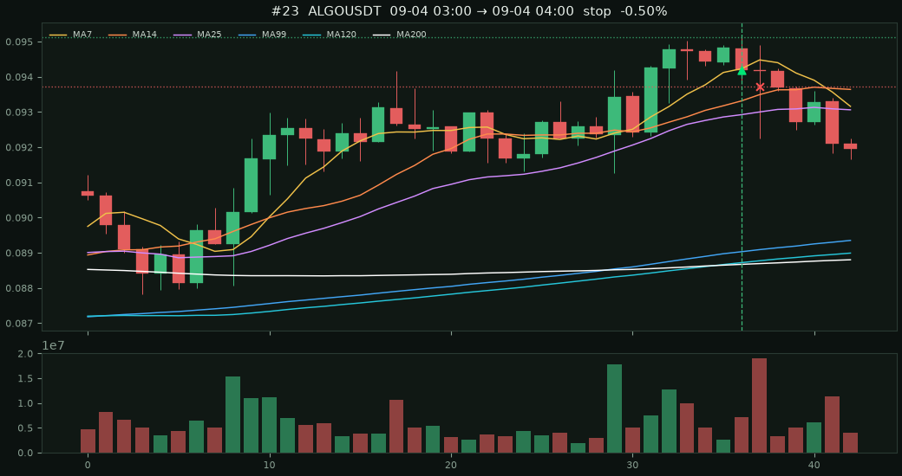
entry 0.02838 stop 0.025681 target 0.033778 exit 0.033778 target +19.02% fwd +1h -2.45% +4h +25.36% +8h +13.74% +24h -1.35%
entry 14.02 stop 13.69 target 14.68 exit 14.16 time +1.00% fwd +1h -0.64% +4h -0.57% +8h +1.00% +24h +23.75%
entry 328.28 stop 326.639 target 331.563 exit 327.47 time -0.25% fwd +1h +0.01% +4h +0.01% +8h -0.25% +24h -2.29%
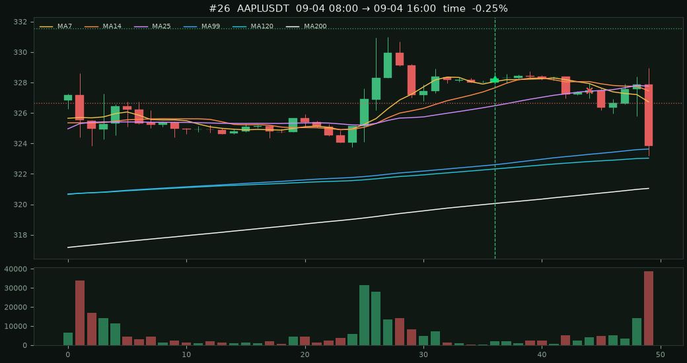
entry 0.3699 stop 0.36 target 0.3897 exit 0.3766 time +1.81% fwd +1h -0.30% +4h -0.24% +8h +1.81% +24h -6.03%
entry 0.5821 stop 0.579189 target 0.587921 exit 0.587921 target +1.00% fwd +1h +1.03% +4h -1.56% +8h -1.77% +24h -4.36%
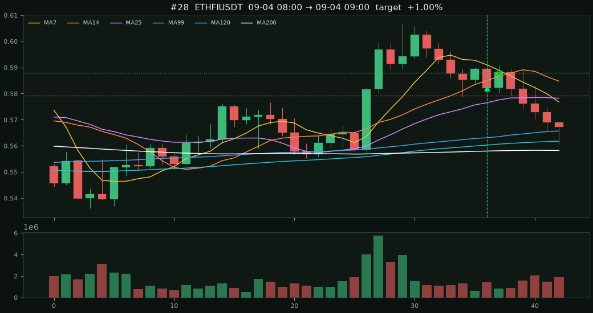
entry 2.518 stop 2.501 target 2.552 exit 2.552 target +1.35% fwd +1h +0.64% +4h +1.39% +8h +1.63% +24h -1.63%
entry 1562.73 stop 1548.53 target 1591.13 exit 1591.13 target +1.82% fwd +1h -0.37% +4h +0.75% +8h +2.10% +24h +10.68%
entry 373 stop 371.135 target 376.73 exit 371.135 stop -0.50% fwd +1h -0.21% +4h -0.72% +8h -0.68% +24h -5.14%
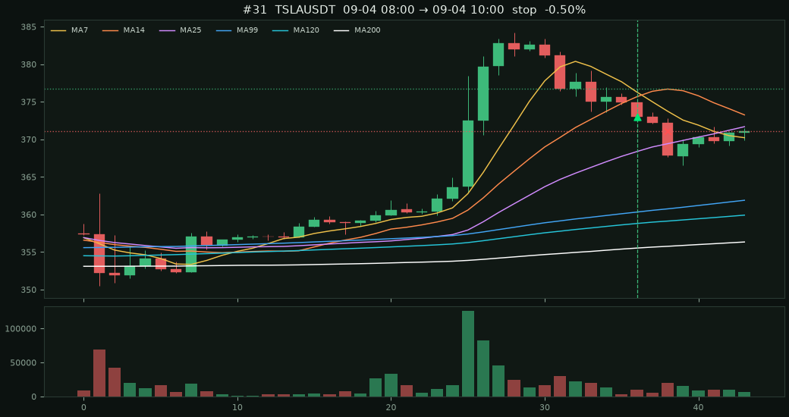
entry 0.002626 stop 0.00261287 target 0.00265226 exit 0.00265226 target +1.00% fwd +1h +0.42% +4h +0.61% +8h +4.49% +24h +5.10%
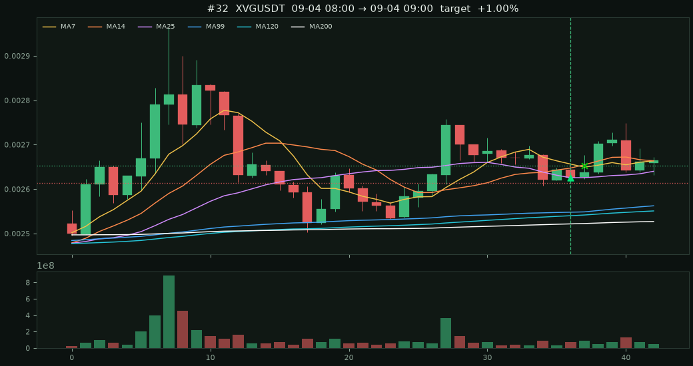
entry 0.0275 stop 0.02699 target 0.02852 exit 0.02699 stop -1.85% fwd +1h -0.18% +4h -2.36% +8h -0.95% +24h -1.09%
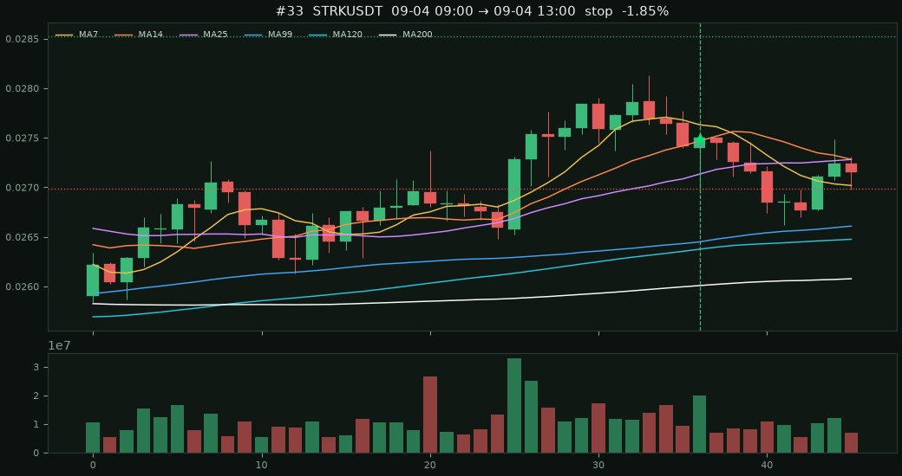
entry 614.78 stop 611.706 target 620.928 exit 611.706 stop -0.50% fwd +1h -0.28% +4h -0.23% +8h -0.93% +24h -0.57%
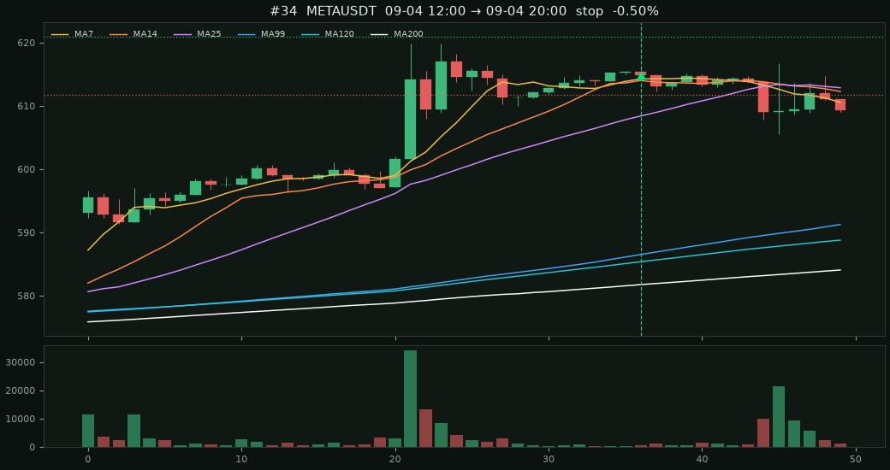
entry 1.9802 stop 1.9703 target 2 exit 1.9703 stop -0.50% fwd +1h -0.46% +4h +0.76% +8h -0.49% +24h +0.15%
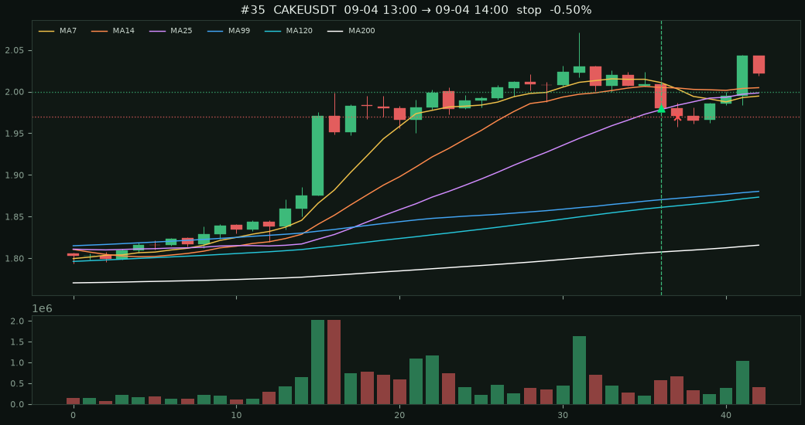
entry 0.00267 stop 0.002643 target 0.002724 exit 0.002724 target +2.02% fwd +1h +2.77% +4h +0.11% +8h -3.03% +24h +15.13%
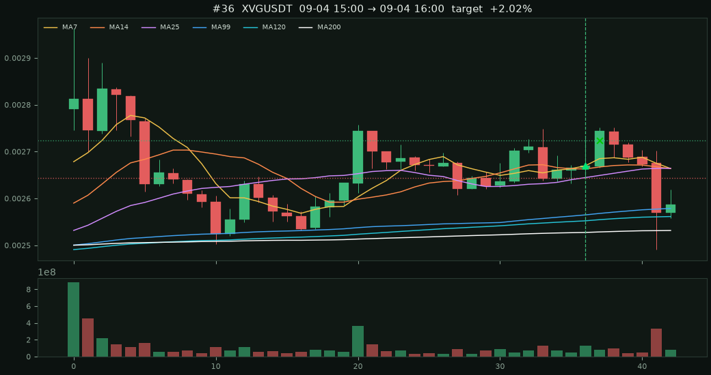
entry 0.6109 stop 0.6041 target 0.6245 exit 0.6041 stop -1.11% fwd +1h +3.55% +4h +4.01% +8h -3.68% +24h +3.94%
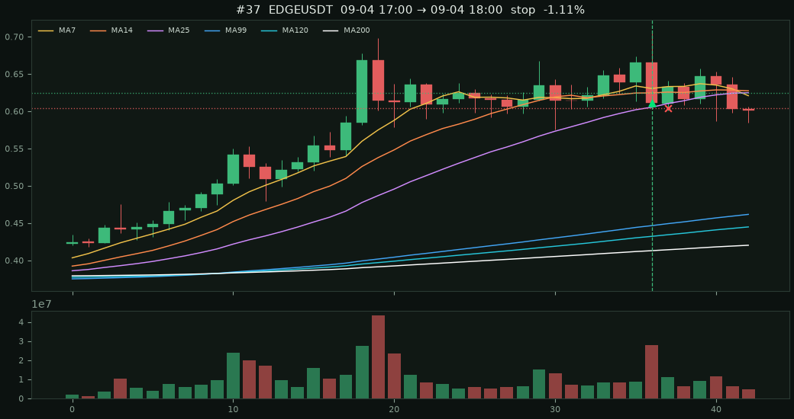
entry 231.71 stop 230.551 target 234.027 exit 230.551 stop -0.50% fwd +1h -0.12% +4h +0.31% +8h -0.38% +24h -0.43%
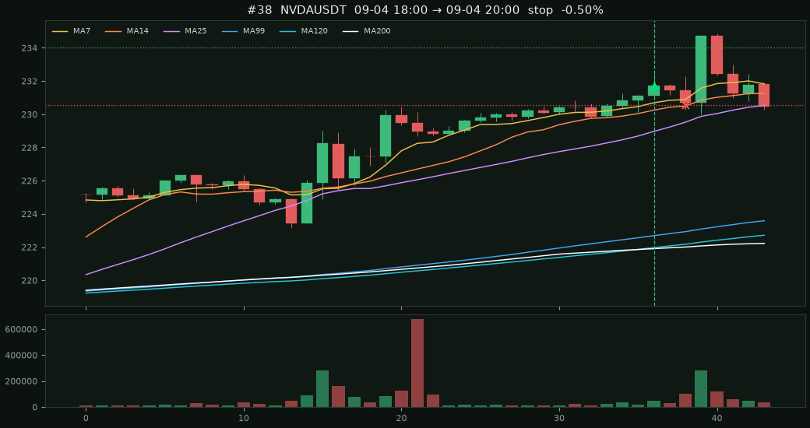
entry 149.47 stop 148.723 target 150.965 exit 148.723 stop -0.50% fwd +1h -0.47% +4h -0.27% +8h -1.09% +24h -0.15%
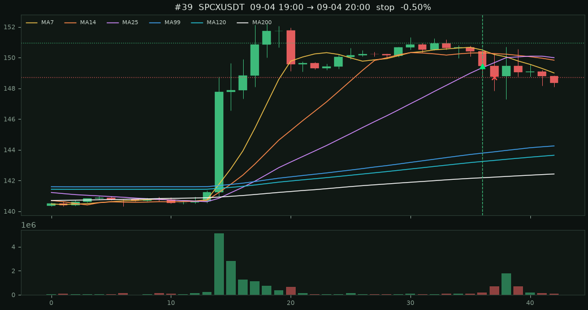
entry 189.54 stop 188.31 target 192 exit 192 target +1.30% fwd +1h +7.56% +4h +12.54% +8h +10.44% +24h +12.08%
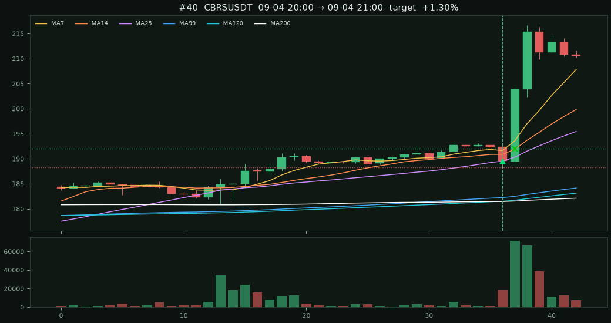
entry 968.29 stop 962.59 target 979.69 exit 979.69 target +1.18% fwd +1h +3.31% +4h +3.95% +8h +4.70% +24h +5.03%
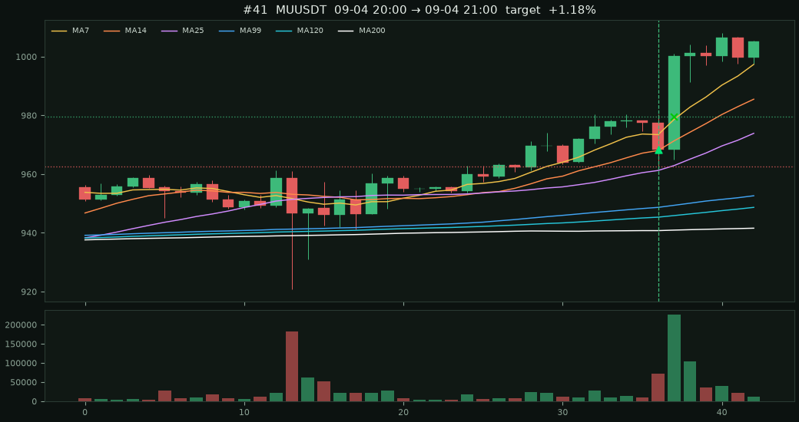
entry 31.29 stop 30.93 target 32.01 exit 32.01 target +2.30% fwd +1h +6.39% +4h +7.64% +8h +9.08% +24h +9.88%
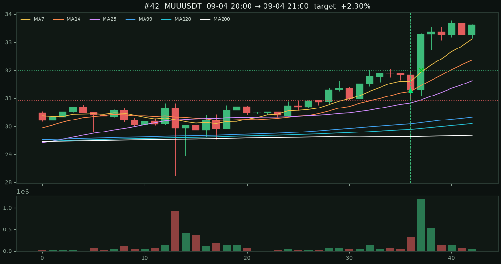
entry 163.94 stop 162.99 target 165.84 exit 165.84 target +1.16% fwd +1h +3.67% +4h +5.45% +8h +7.23% +24h +7.23%
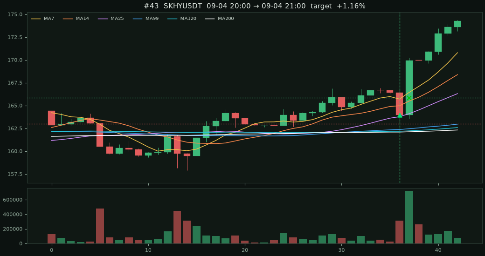
entry 1577.19 stop 1562.56 target 1606.45 exit 1606.45 target +1.86% fwd +1h +5.06% +4h +9.97% +8h +9.88% +24h +11.57%
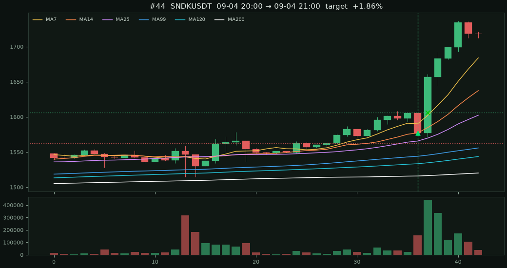
entry 14.42 stop 14.18 target 14.9 exit 14.9 target +3.33% fwd +1h +10.19% +4h +19.83% +8h +19.56% +24h +22.88%
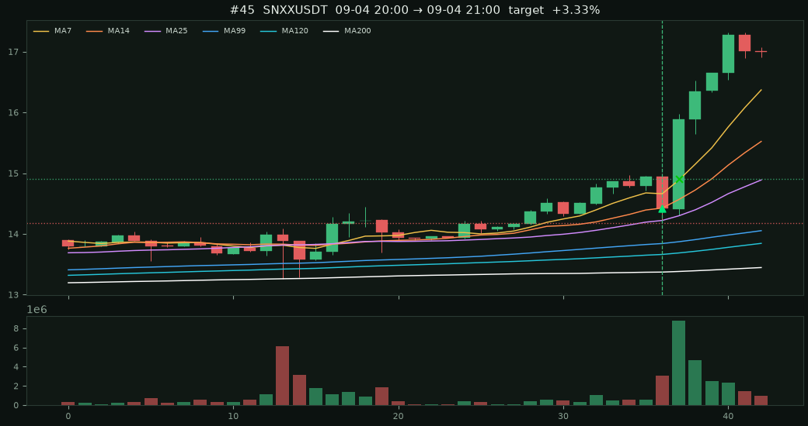
entry 0.010389 stop 0.0103371 target 0.0104929 exit 0.0103371 stop -0.50% fwd +1h -1.10% +4h -0.83% +8h -0.47% +24h —
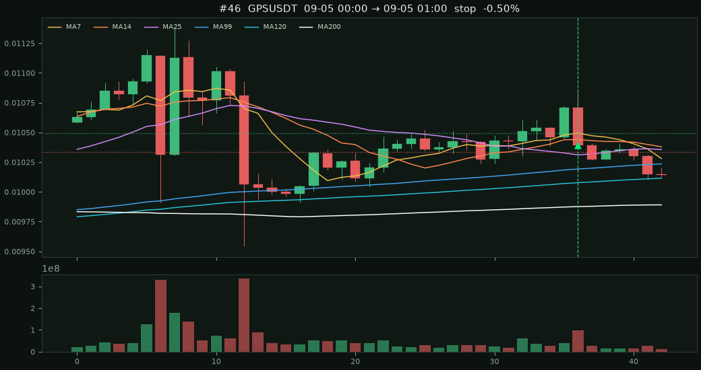
entry 230.83 stop 229.676 target 233.138 exit 230.26 time -0.25% fwd +1h -0.11% +4h -0.30% +8h -0.25% +24h —
entry 522.11 stop 519.499 target 527.331 exit 522.38 time +0.05% fwd +1h -0.08% +4h -0.01% +8h +0.05% +24h —
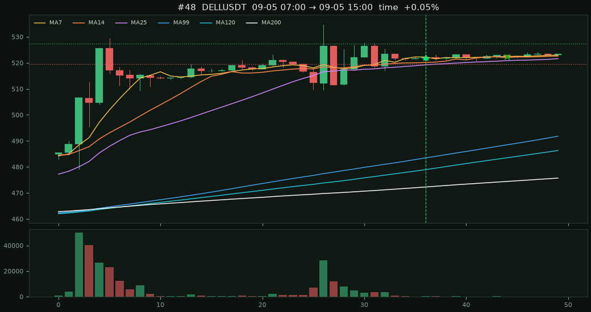
entry 95.53 stop 95.0524 target 96.4853 exit 96.12 time +0.62% fwd +1h +0.21% +4h +0.28% +8h +0.62% +24h —
entry 727.69 stop 721.99 target 739.09 exit 739.09 target +1.57% fwd +1h +1.52% +4h +2.88% +8h +5.86% +24h —
entry 91.11 stop 90.6544 target 92.0211 exit 91.54 time +0.47% fwd +1h +0.00% +4h -0.01% +8h +0.47% +24h —
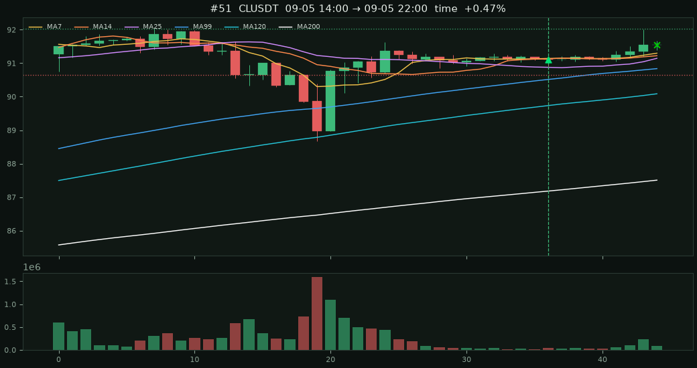
entry 1015.35 stop 1010.27 target 1025.5 exit 1015.05 open -0.03% fwd +1h -0.10% +4h +0.23% +8h — +24h —
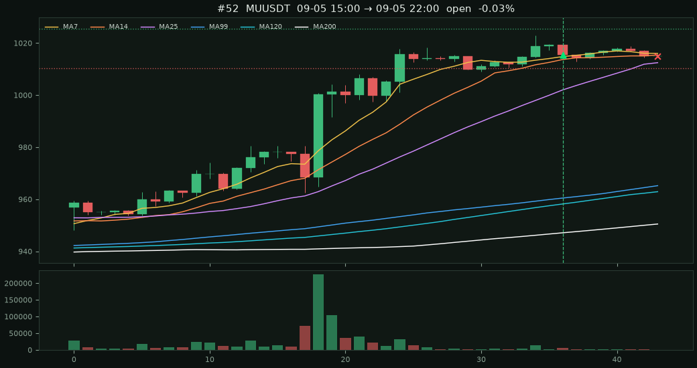
entry 0.628 stop 0.6234 target 0.6372 exit 0.6372 target +1.46% fwd +1h +0.89% +4h +1.32% +8h — +24h —
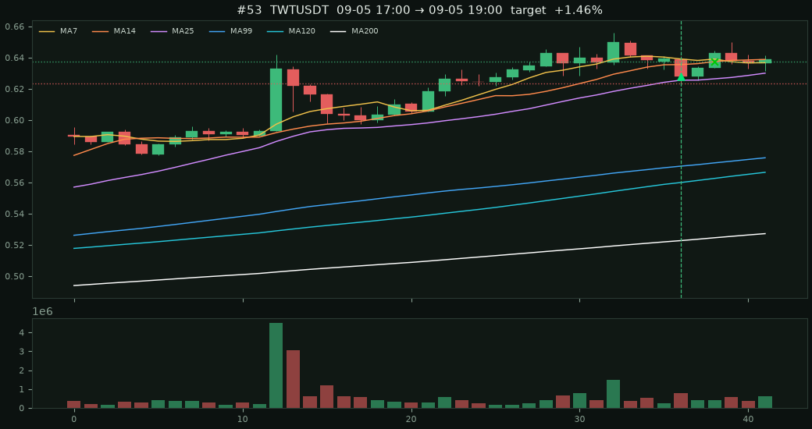
entry 95.86 stop 95.3807 target 96.8186 exit 96.31 open +0.47% fwd +1h +0.05% +4h — +8h — +24h —
entry 613.63 stop 610.562 target 619.766 exit 614.3 open +0.11% fwd +1h +0.20% +4h — +8h — +24h —
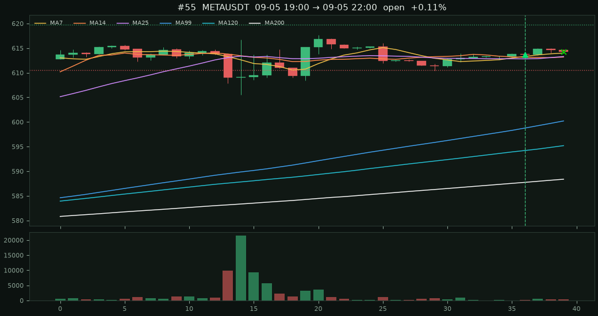
entry 0.06832 stop 0.06791 target 0.06914 exit 0.06791 stop -0.60% fwd +1h -1.39% +4h — +8h — +24h —
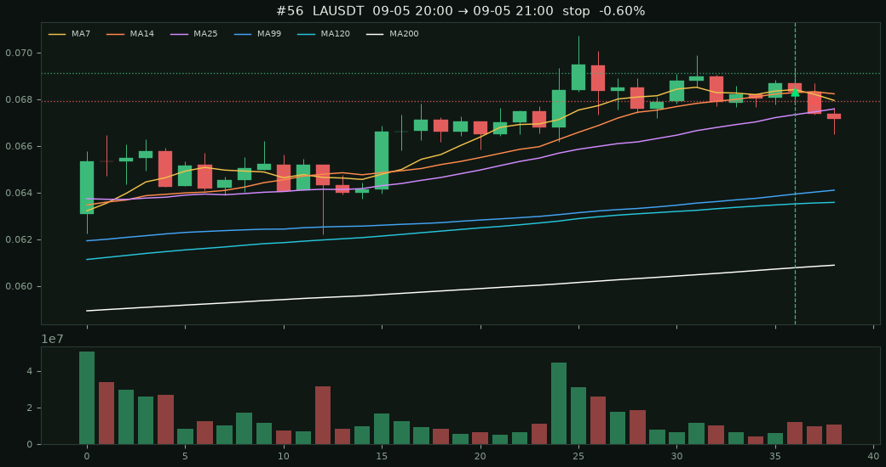
entry 11.831 stop 11.72 target 12.053 exit 11.881 open +0.42% fwd +1h +0.08% +4h — +8h — +24h —
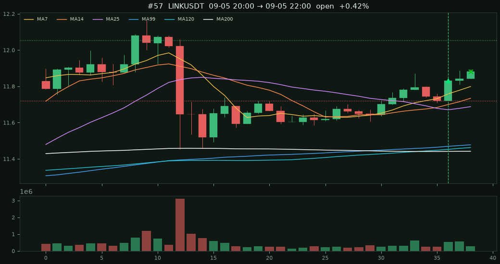
entry 0.13312 stop 0.132454 target 0.134451 exit 0.134451 target +1.00% fwd +1h +0.95% +4h — +8h — +24h —
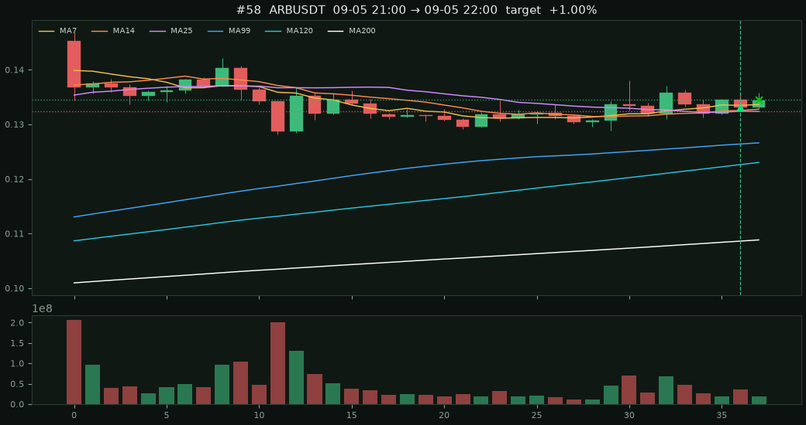
entry 523.75 stop 521.131 target 528.987 exit 522.76 open -0.19% fwd +1h -0.19% +4h — +8h — +24h —
entry 0.283 stop 0.27 target 0.309 exit 0.291 open +2.83% fwd +1h +2.83% +4h — +8h — +24h —
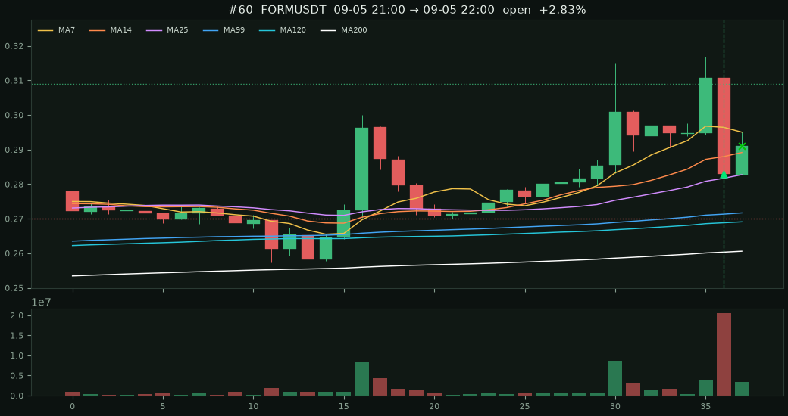
entry 96.19 stop 95.709 target 97.1519 exit 96.14 open -0.05% fwd +1h -0.05% +4h — +8h — +24h —
entry 1412.17 stop 1405.11 target 1426.29 exit 1420.25 open +0.57% fwd +1h +0.57% +4h — +8h — +24h —
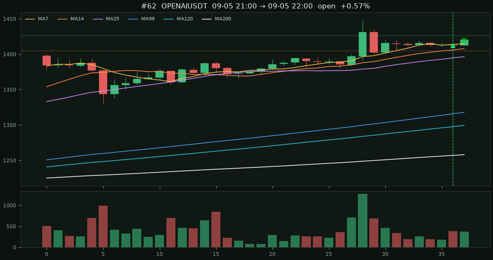
entry 149.27 stop 148.524 target 150.763 exit 149.4 open +0.09% fwd +1h +0.09% +4h — +8h — +24h —
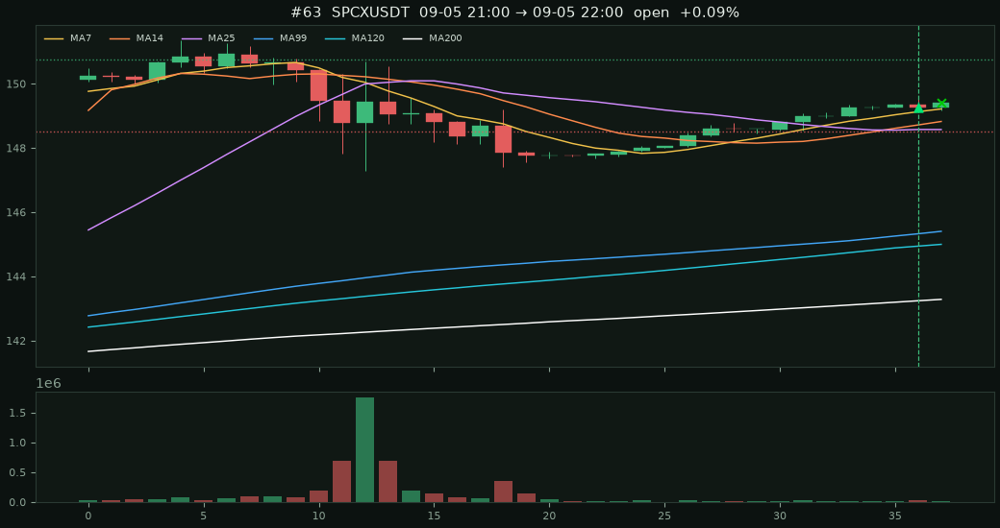